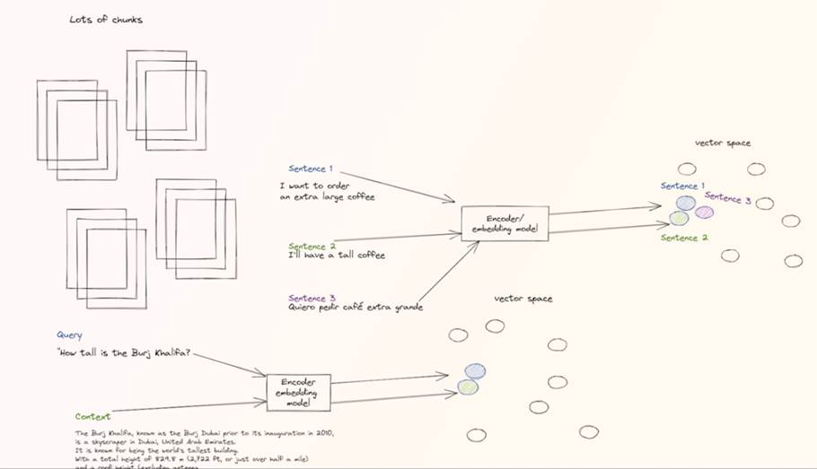
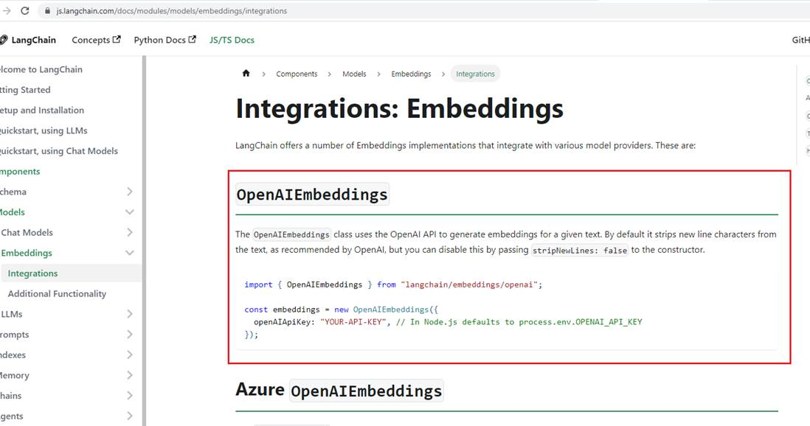
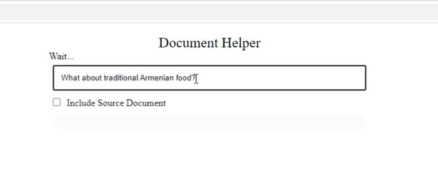

LangChain Documentation Helper
GitHub Repository: https://github.com/Ashot72/LangChain-Documentation-Helper
Video link: https://youtu.be/c9ujzXuMx9Y
What is LangChain? https://js.langchain.com/docs/
LangChain is de facto go to framework for building LLM (Large Language Model) based applications. It gains massive popularity lately for developers wanting to get into
AI (Artificial Intelligence) and to build I based applications.
LangChain has a number of core concepts. Let's go through them briefly.
Components and Chains
In LangChain, components are modular building blocks that can be combined to create powerful applications. A chain is a sequence of components (or other chains) put together to accomplish a specific task.
Prompt Templates and Values
A Prompt Template is responsible for creating a PromptValue, which is what's eventually passed to the language model. Prompt Templates help convert user input and other dynamic information
into a format suitable for the language model.
Example Selectors
Example Selectors are useful when you want to include examples in a prompt dynamically. They take user input and return a list of examples to use in the prompt, making it more powerful and context-specific.
Output Parsers
Output Parsers are responsible for structuring language model responses into a more usable format. They implement two main methods: one for providing formatting instructions and another for parsing
the language model's response into a structured format.
Indexes and Retrievers
Indexes are a way to organize documents to make it easier for language models to interact with them. Retrievers are interfaces for fetching relevant documents and combining them with language models.
LangChain provides tools and functionality for working with different types of indexes and retrievers, like vector databases and text splitters.
Chat message History
LangChain primarily interacts with language models through a chat interface. The ChatMessageHistory class is responsible for remembering all previous chat interactions, which can then be passed
back to the model, summarized, or combined in other ways. This helps maintain context and improves the model's understanding of the conversation.
Agents and Toolkits
Agents are entities that drive decision-making in LangChain. They have access to a suite of tools and can decide which tool to call based on user input. Toolkits are sets of tools that, when used
together, can accomplish a specific task. The Agent Executor is responsible for running agents with the appropriate tools.
Memory
LangChain has a standard interface for memory, which helps maintain state between chain or agent calls. It also offers a range of memory implementations and examples of chains or agents that use memory.
LangChain is super powerful because it helps us to interact with a lot of third-party apps.
Figure 1
It implements a lot of wrappers around those third parties. That makes is easy to connect to them and retrieve data from them that we can process with our LLM. This data comes
in the form of documents. That is the terminology in long chain and a document is simply something that holds text. If we have a PowerPoint representation, PDF files, images they
are all represented as a text. Document Loader class is the abstraction that is going to help us use this text data. We are going to load the data into documents and work with documents
and send them to LLM.
Figure 2
When we work with LLM we are dealing with limited number of tokens. It is a common issue. There are couple of ways of dealing with this, and we will use Text Splitters. Basically, when we want
to deal with long pieces of text, it is necessary to split it up to chunks. It may sound simple to chunk it up, but there is a lot of different files and there are lot of different approaches that we can keep
everything semantically related. A text splitter will help us split the text into chunks and if we want to comprise it later, it will help us to reassemble it together.
Figure 3
For example, let's say it is a book and we want to ask questions about this book and the file is too big. We will hit the token limit because there are way more than 4K tokens in a book. Let's say
that the questions that we want to answer resides in a specific part in the book or over a couple of parts and in very specific places. So, even if we split up the book into lots of chunks and take one
chunk or two or three chunks together and send them as a context to LLM to answer the question, we will make a lot of redundant API calls because the information for our answer is only in specific kind
of chunks. If we have five chunks it is OK, but what about 1 million chunks? If we have 1 million chunks, we will make a lot of redundant API calls, which will cost as a lot of money.
Figure 4
So, what if there was a way to get with some kind of magic, the relevant chunks that we need that contain the answer or have a high probability of containing the answer and only
sending those chunks to LLM? In that way we only make a couple of API calls or even one and we can save a lot of money and get response a lot faster and not doing any redundant work.
If that is possible to get those relevant chunks, then that would be amazing. It will save a lot of time, effort, resources and money. It turns out that there is a way to do it and it is super cool and interesting.
Embeddings
Let's talk about embeddings.
Figure 5
Text embedding is a classic technique and super useful in the natural language processing world. The idea is to create a vector space from the text such as the distance between the
vectors int the space has a certain meaning. But what is a vector?
Figure 6
A vector is simply a sequence of numbers and what is cool about a vector is that it can represent a more complex object like words, sentences, images, audio files in a high continues high dimensional
space called an embedding.
Figure 7
Embedding Model.
Figure 8
Vectors with similar semantic meanings are very close together. In the picture we have three sentences. In well-defined embedding the vectors representing those sentences will be close
together in the vector space or embedding space. It even does not matter that those sentences are even not in the same language, because the semantic meaning here is pretty much the same.
How calculate the distance between the vectors?
When working with embeddings, two common methods for measuring similarity or distance between vectors are cosine similarity and Euclidean distance. Here's an explanation of each approach:
Cosine similarity: Cosine similarity measures the similarity between two vectors by calculating the cosine of the angle between them. It is based on the direction rather than the magnitude of the vectors.
Cosine similarity ranges from -1 to 1, with 1 indicating that the vectors are identical, 0 indicating no similarity, and -1 indicating they are diametrically opposed.
Cosine similarity is often used when comparing the semantic similarity between vectors because it focuses on the orientation of the vectors in the vector space.
Euclidean distance: Euclidean distance calculates the straight-line distance between two vectors in the vector space. It measures the overall dissimilarity or distance between the vectors.
Euclidean distance is calculated as the square root of the sum of the squared differences between corresponding elements of the vectors. Euclidean distance ranges from 0 to positive infinity,
with 0 indicating that the vectors are identical, and higher values indicating greater dissimilarity. Euclidean distance is commonly used when comparing the overall similarity or dissimilarity between vectors.
Figure 9
Let's say that in the vector space, the query that we ask the LLM can be represented by the orange vector that you see in the square shape. If there is a way to find its closest neighbors,
its closest vectors that have the least amount of distance to it, then they would provide some very good context. If those vectors represent something that its information or data source etc.
then we can take it, send it as the context with the query to the LLM. So, our prompt will contain our query, plus the context information and tell the LLM to use that context in order to
answer the query.
Figure 10
These relevant chunks we talked about in the Vector database is a database that is saving those embeddings, those vectors and is able to provide
us with no time the closest vectors to the vector we want. It takes embeddings and it simply persist them and makes it easy for us to use them later.
Now, let's consider the following example which is very close to our app.
Figure 11
We have the huge file representing a book. The file weights a lot of gigabytes and it is very large. We can split it into chunks and LangChain Is helping us to do it very easily.
So, we took the huge file or a couple of files or a couple of gigs and split it into thousands or millions of chunks of texts.

Figure 12
We can take all of these chunks and embed them using an embedding model and turn them into a vector that each vector represents the chunk. Each vector is going to be some
numbers which is going to represent that given chunk that was embedded.
Figure 13
Now, we can take those embeddings and save them into a vector database like Pinecone, for example. If we want to ask a question about the book we can take that question as the query,
embed it into a vector, place it into the vector space where all the embeddings (chunks) of the book exist.
Figure 14
Now, we can calculate what are the closest vectors to the query vector that we embedded and those vectors are semantically close to our query vector, and that is what is representing
those relevant chunks we talked about. We can simply send this context of the relevant chunks with our query in our prompt. We will send it to the LLM then will say, hey, what did John do to Alice in the book?
Then we will send it with the context, the specific chunks, that have this answer and information. LLM will easily be able to answer this question.
Let's go through our app.
Figure 15
We have different files in data folder and what we are going to do is to extract text from raw documents to use it in our application.
Figure 16
We use Unstructured Python package that we can use in our Node.js application. You can see it supports different file formats. For our app I use txt, pdf and HTML formats. We are going to chunk them up,
embed them and turn them into a vector and put it into a vector store.
Figure 17
In the first step we load data using UnstructuredDirectoryLoader pointing data folder. We load and split it using RecursiveDirectoryLoader.
Figure 18
This is a LangChain UnstructuredDirectoryLoader.
Figure 19
We have abstract Text Splitter and its four implementations.
Figure 20
RecursiveCharacterTextSplitter splits documents by different characters which will try to keep all the semantically relevant content in the same place.
Figure 21
Here is an example of RecursiveCharacterTextSplitter. You can see that in the chunk size is 10 and overlap is 1. You see that have 4 g letter gggg in the content but in the output, we have 5 g letter ggggg.
When the chunk size is more than 10 (no splitting by different characters Figure 6) then the last letter (as chunkOverlap is 1) is also added to the next chunk.

Figure 22
If we assigned chunkOverlap to 3 then we would see two ing in two chunks. By overlapping the chunks, we ensure that important patterns or events near the chunk boundaries
are captured and not discarded. By including overlapping segments, the algorithm can make better predictions or identify more nuanced patterns n the data.
Figure 23
In our app we specified chunkSize to 1000 and chunkOverlap to 100. I want to emphasize that semantic analysis often relies on the context of words or phrases within a larger textual context.
With smaller chunk sizes, there is a risk of losing the broader context in which the analyzed text appears. This can potentially lead to misinterpretations or incomplete understanding of the semantics,
especially when dealing with ambiguous or context-dependent language.
Figure 24
In our app we use Pinecone https://www.pinecone.io/ and what is it?
Pinecone is a cloud-based vector database and indexing. It is closely associated with embeddings, as it designed to store, index and search high-dimensional vector embeddings efficiently.
Figure 25
In the video you could see how I created an index in Pinecone. From the app I can embed my documents specified in data folder. Pinecone allows you to create just one index if you use their free plan.

Figure 26
I specified Pinecone key, environment and index in the .env file.
Figure 27
Note, that the Output Dimensions must be 1536.
Figure 28
If you go to OpenAI page you will see that number.

Figure 29
By the way, you can use various model providers. In our app we use OpenAIEmbeddings.
Figure 30
When you the app code you may notice that we do not provide OPENAI API KEY when connecting to OpenAI.
Figure 31
The reason is that when you specify OPENAI_API_KEY in the .env file it is automatically picked up in the code.
This is all that we have in the app's embed.ts file to save our data in the vector store.
Figure 32
When a user asks a question then the request is redirected to getAnswer function and we connect to Pinecone vector store using the index.
Figure 33
I temporarily included VectorDBQAChain to discuss something which will not be in the final implementation.
VectorDBQAChain is going to be deprecated in the next couple of months. It has super elegant replacer called RetrievalQAChain which we have used in our application.
The problem of VectorDBQAChain that it was deprecated is that they want to support more methods besides semantic similarity search. Let's review VectorDBQAChain.
This is very cool chain because it does lots of things.
Figure 34
What this chain does is takes the query, the prompt, embeds it as a vector, then takes couple of vectors which are closest to the query vector semantically then returns it.
The chain is going to take those vectors, translate them back into chunks, and those are the context which we are going to pass to the modified prompt. So, the new prompt
will be the original one plus the relevant chunks. We say, hey, listen we have this prompt and we know that those texts are very important and they probably have the answer for this prompt.
Please do your magic and use them as your context. You see that out question or prompt is Armenia is home to the oldest winery?
The response is Yes, Armenia is home to the world's oldest … PageContent is the relevant chunk (context) that we pass with the question to the LLM.
Figure 35
In the app we use ConversationalRetrievalQAChain instead of VectorDBQAChain and use retriever.
What it the retriever? It is simply a wrapper around vector store which helps us go and retrieve with the similarity search and turn every vector store into retriever class by using asRetriever()
function which simply takes the Vector store and wraps it in the retriever class. We also retrieve source documents returnSourceDocuments based on the checkbox so we can
return the actual documentations.

Figure 36
We ask a question.
Figure 37
We get a response.
Figure 38
Then we ask is it good? meaning food.
Figure 39
It understood it.
Figure 40
The reason is that we keep chat history and pass it to the chain. Chat history is a question plus the response. This way it understands the context.
Figure 41
Let's comment the line and do not keep the history.
Figure 42
Now. When we ask the same question then it cannot answer as it does not know the context.